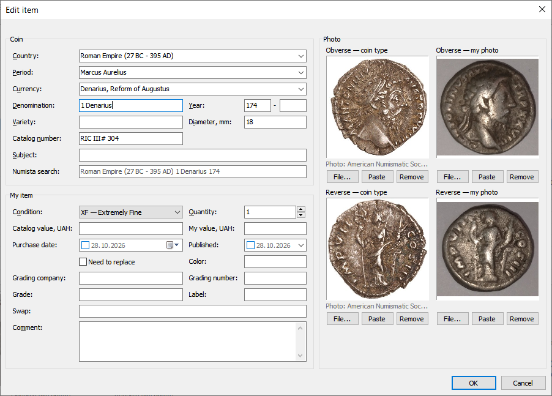

Картка монети

Collection → Add / Edit / Delete/Колекція → Додати / Змінити / Видалити або подвійне клацання по рядку — змінити.
Add from sample/Додати за зразком (Ctrl+Ins, також у меню правого клацання) відкриває картку, заповнену даними виділеної монети, — змініть рік і натисніть OK. Зв'язок з Numista, фраза пошуку, фото й дати не копіюються; автозв'язок потім знайде нову монету за монетою з тим самим номером. З тим самим роком картка додасть ще один примірник тієї ж монети.
Монета і Мій примірник
- Coin/Монета — дані типу монети: країна, період, валюта, номінал, рік (діапазон — друге поле; до н. е. — від'ємний рік,
-44), різновид, діаметр, номер у каталозі, сюжет. Вони спільні для всіх примірників цієї монети; якщо примірників кілька, картка попереджає. - Mintage/Тираж і Metal/Метал — свої значення для монет, про які Numista не має даних (римські, без зв'язку чи без випуску). Метал виберіть зі списку (метали, що вже є у вашій колекції й типах Numista, і базовий набір: Gold, Silver, Billon, Orichalcum, Bronze…) або впишіть свій. Порожнє поле показує значення Numista сірим; вписане значення важливіше за Numista і в подробицях позначається (вручну). Update catalogue data/Оновити дані каталогу, зв'язок і повторний імпорт з uCoin його не змінюють; очистіть поле — знову значення Numista.
- Numista search/Пошук Numista — власна фраза пошуку на Numista. Порожньо — автоматична фраза (сірим): країна, рік і сюжет (або країна, номінал, рік, якщо сюжету немає). Див. Numista: зв'язок монет.
- My item/Мій примірник — ваш примірник: стан, кількість, ціни, дати, обмін, коментар, грейдинг. Catalog value/Ціна за каталогом — оцінка uCoin; Purchase price/Ціна купівлі — скільки ви заплатили, валюта — поруч (UAH, USD, EUR, GBP, PLN або інший код із трьох літер). Ціна купівлі з валютою вивантажується на Numista.
Фото
Дві колонки: ліворуч фото типу (зображення з каталогу Numista або ваше фото типу, спільне для всіх примірників монети; під ним — автор зображення), праворуч моє фото — ваші знімки цього примірника. Для кожної рамки: File.../Файл..., Paste/Вставити (з буфера обміну), Remove/Видалити або перетягніть файл із Провідника на рамку. Див. Фото.
Зміни зберігаються кнопкою OK; Cancel/Скасувати нічого не змінює.